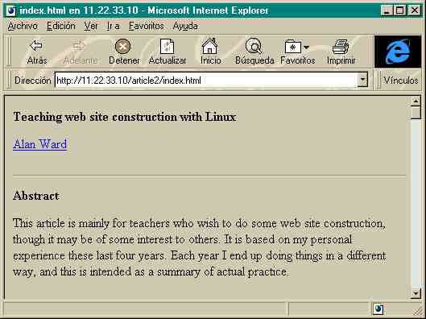
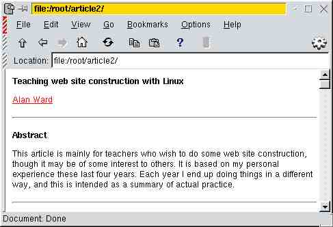

![[ TABLE OF CONTENTS ]](../gx/indexnew.gif)
![[ FRONT PAGE ]](../gx/homenew.gif)

![[ Linux Gazette FAQ ]](./../gx/dennis/faq.gif)

Abstract
This article is mainly for teachers who wish to do some web site construction, though it may be of some interest to others. It is based on my personal experience these last four years. Each year I end up doing things in a different way, and this is intended as a summary of actual practice.
Introduction
The main questions nowadays when teaching web construction are:
As for the environment, I mean on which server (as for software) shall our site be placed? The main choice is between a Microsoft server running under Windows NT (professional) or Windows 9X (local intranet), or on the other hand a Unix server. In this latter case, Apache seems to hold a large part of the market, though it is by no means a monopoly :-).
This is an important question as each server has its own capabilities and quirks.
The HTML editor question depends to a certain extent on our response to the first question. If we are developing for a Microsoft server, it makes sense to write our pages with MS Frontpage (complete or Express). The same goes for a Netscape server and Netscape Communicator. With a Unix/Linux, the debate can be more extensive.
You will notice that I have no particular tendency towards or away from Microsoft products. I am sure that Internet is large enough to find people working on any combination of hardware and software -- just as well! I personally develop with a Linux+Apache server and a Windows+iExplorer+Netscape+HotJava client.
Naturally, our answers to these questions depend both on personal choice and on the end result we want to produce. To analyse these, several factors can be taken into account, that I will formulate as questions.
The server environment
The first factor is: "Do we want to produce something (i.e. a real web site) as a conclusion to our project?" The answer to this is almost always yes. Then, we must see where we will have it. Shall the web site be on a local network (intranet), or must it go global (internet)? Shall it start life locally (eg. for development and testing) -- and hope to go global later on (when complete)? If this is so, special care must be taken to use the same kind of server on both.
An example: say you develop locally with a MS Personal Web Server, and when finished send your site to your favourite ISP -- who runs Unix+Apache. On PWS, it is easy to write "\" for "/" to separate subdirectories, and PWS works fine. Apache does not, holding to the Unix convention (makes sense, right?). A stupid mistake, but it happened to me.
So this is where Linux steps in. The Apache server works in exactly the same fashion on your local 486 Linux box and on your ISP's Sun/Solaris. So you have a fair certainty that if it works for you, it will also work on the Web. This point is particularly important when teaching kids: if what they do doesn't work because they messed up, that's OK. If it doesn't work because of a "technical problem", uh-oh. :-(
All the more reason to know your ISP. Mine is one student's parent -- so anything I do in class goes back home for checking! Keeps me on my feet.
Another point that can be made -- and that I had pointed out to me by students -- is the use of an FTP client. Web maintenance is something I like to speak about in my classes. However most maintenance is done nowadays through the use of FTP to upload pages to the server. As you may know, Microsoft Frontpage uses the local network to upload pages directly on a local server, while a Linux+Apache server almost always has a FTP server running, just like a "big" Unix box.
So one can practice locally the moves to upload pages to the server, before going online. You can also address matters such as home directories on the server, versus ".public" directories.
My experience so far is that my classes on Unix/Linux help students understand better the intricacies of web servers, while my classes on web maintenance help them find real-life, direct applications for their Unix knowledge. I guess it is important to give a complete and coherent picture.
The HTML editor
So we have our local server chosen, and going for developing. Now, the question is: "Which editor do I use?"
I like to start out with a plain-text editor, so they can get the feel of pure HTML coding, before going on to something more sofisticated. If they can write HTML, they will soon learn to use an advanced editor such as Frontpage, and -- perhaps more importantly -- be able to correct the editor's output. The reverse is not always true.
Under Windows, I use NotePad. Mainly to escape from issues related to different file formats that can be a pain with Write, Works or Word. Under Linux, I use whichever is convenient (gedit, kedit, vi ...). I am writing this article with my favourite: Emacs with HTML mode enabled.

When going on to a more advanced editor, Netscape Composer is a choice I will work with this course. This is because it is available on many platforms: my students have at home Intel boxes under Windows and Linux (my fault!), and also Macintoshes. I have been unable to find as many versions of other editors such as MS Frontpage Express or Hotmetal. The complete MS Frontpage I leave alone, as it doesn't seem to interface well with Unix servers.
Even further on, it is worth to examinate the possibilities of MS Word or Publisher. OK, I know they both produce really ghastly HTML code! But they do produce this code -- from existing documents -- with relative ease. I gave a course on Frontpage this summer, and ended up realizing that most students (they were in fact fellow teachers undergoing "formation") would use Word to produce their pages. The fact was they all wanted to publish texts -- they had written in Word -- on the Web. Now, when I get my hands on StarOffice, I may have to revise this judgement.
Debugging
A further factor is: "Who's going to read me, and with which browser?" As you may know, HTML browsers may produce a quite different output from a same page. And to paraphrase Moore's Law: if there exists a weird browser, someone out there is sure to use it.
The only way to ensure that what we've produced is more or less universally accepted is to debug: ie. try out our site locally on different browsers. Ideally, it would be nice to:

This can also be a practical way of comparing OS in the classroom, so that students can see the diversity of OS and browsers available. Not a bad way of introducing Linux to students who are yet in the Windows stage.
You can also see what works with each. Some problems can come from:
One last point that deserves attention and debugging is (for us Latin charset users) accentuation. For example, I test my pages with both a Spanish and a French Windows (accents have different ASCII codes with these charsets).
Conclusion and previsions
Although the final impression, after these four years, is to a certain extent one of confusion, at least I know why this is so. On Internet, many different hardware and software (and meatware) setups coexist. In fact, it is one of the only ways many people do get in touch with this diversity.
So, from a teacher's point of view, either one can close one's eyes and bury one's head in the sand (see no evil, hear no evil), or one can face this diversity -- and pass it on to the students (say no evil!). Is it good to address such diversity directly, with the consequent danger of muddling things up? I can only answer speaking from my personal situation: I feel my kids (17-18 year-olds) have enough experience as users of Internet so that this diversity has been creeping gradually up into their conscience. So if I straighten out the questions that do arise, that can't be too bad.
A similar field I would like to work in this course is web programming, both server-side (CGI) and client-side (Java). Here, the Apache server once more gives me what I need to develop CGI with both C and Perl, unlike Microsoft. A point to consider is that my ISP allows me to include Perl scripts in my page, but not programs in C (that he would have to recompile).
On the other hand, the Java Development Kit (JDK) is available for downloading from Sun (java.sun.com) both for Linux and for Windows. Another thing I also liked a lot is their habit of giving many examples. Is there a better way of learning to program?
[Editor's note: The author's previous article in LG #45, Sharing a Linux server under X in the classroom, is now available in Hungarian as Linux szerver megosztása a tanteremben X-Window segítségével. -Ed.]